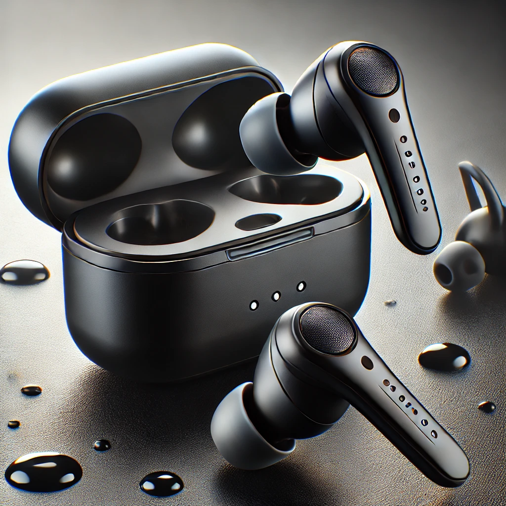

ramitech
Los auriculares inalámbricos Bluetooth ofrecen una experiencia de sonido envolvente y sin cables, ideal para aquellos que buscan libertad de movimiento mientras disfrutan de su música, podcasts o llamadas. Con un diseño ergonómico, se ajustan cómodamente a cualquier oído, proporcionando horas de uso sin molestias. Están equipados con tecnología de cancelación de ruido, lo que garantiza una calidad de sonido clara incluso en entornos ruidosos. Estos auriculares tienen una batería de larga duración que permite hasta 8 horas de reproducción continua y vienen con un estuche de carga portátil que extiende su autonomía. Son resistentes al agua y al sudor, lo que los convierte en la elección perfecta para entrenamientos y actividades al aire libre. Además, incluyen controles táctiles para gestionar llamadas, cambiar canciones y ajustar el volumen sin tener que sacar el teléfono del bolsillo. Son compatibles con dispositivos iOS y Android. Una opción imprescindible para aquellos que valoran la comodidad, la calidad de sonido y la movilidad..
 $50.00